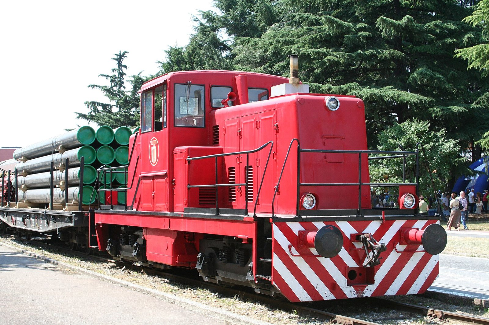

Piazza Affari chiude la seduta di martedì 15 settembre 2026 praticamente sulla parità: il FTSE MIB cede lo −0,14% a 51.555 punti, dopo aver recuperato nel pomeriggio gran parte del ribasso accumulato in apertura, quando l'indice era arrivato a perdere lo 0,61%. Il quadro interno racconta però una giornata tutt'altro che piatta: il petrolio oltre i 105 dollari ha diviso il listino in due, premiando le società dell'energia e dei servizi petroliferi e lasciando indietro le banche e il lusso.
Perché conta: un indice fermo nasconde uno spostamento di denaro reale da un settore all'altro. Chi ha in portafoglio fondi sull'Italia ha visto lo stesso risultato di ieri, ma la composizione sotto è cambiata: il mercato sta pagando di più chi guadagna con il greggio caro e di meno chi teme che il greggio caro rallenti l'economia. È la stessa forza che a New York ha spinto il decennale americano al 5%.
I protagonisti della seduta
| Titolo | Variazione giornaliera | Settore |
|---|---|---|
| Gas Plus | +10,4% | Energia (fuori FTSE MIB) |
| Tenaris | +3,3% | Servizi petroliferi |
| Terna | +2,9% | Rete elettrica |
| Eni | +1,7% | Energia |
| Saipem | +1,6% | Servizi petroliferi |
| Monte dei Paschi | +1,5% | Banche |
| Mediobanca | +1,4% | Banche |
| Leonardo | +1,3% | Difesa |
| Nexi | +1,1% | Pagamenti |
| Ferragamo | −4,5% | Lusso |
| UniCredit | −2,2% | Banche |
| Moncler | −2,0% | Lusso |
| BPER | −1,7% | Banche |
| Lottomatica | −1,3% | Gioco |
| Stellantis | −1,2% | Automotive |
| Banco BPM | −0,4% | Banche |
| Intesa Sanpaolo | −0,2% | Banche |
Perché il greggio caro premia Tenaris e Saipem
Il miglior titolo del paniere principale è Tenaris (+3,3%), seguito a distanza dagli altri nomi dell'energia. Non è un caso: Tenaris produce tubi senza saldatura per l'industria petrolifera, e Saipem costruisce e gestisce infrastrutture di estrazione e trasporto. Sono aziende che non vendono petrolio, ma vendono a chi il petrolio lo estrae. Quando il greggio è caro, le compagnie petrolifere hanno più margini e riaprono i cantieri rimandati: gli ordini per tubi, piattaforme e condotte aumentano con un ritardo di qualche trimestre.
Il caso più vistoso della giornata è però fuori dall'indice principale: Gas Plus ha chiuso a +10,4%. Sulle società piccole del comparto energia i movimenti sono sempre più ampi, perché bastano volumi modesti per spostare il prezzo.
💡 Impara: che cosa sono gli oil services
Gli oil services (servizi petroliferi) sono le aziende che forniscono alle compagnie petrolifere tutto ciò che serve per cercare, estrarre e trasportare il greggio: tubi, piattaforme, navi di perforazione, condotte, ingegneria. In Italia i nomi principali sono Tenaris e Saipem. La differenza rispetto a una compagnia come Eni è importante per chi investe: Eni guadagna direttamente dal prezzo del petrolio che vende, mentre gli oil services guadagnano dagli investimenti che le compagnie decidono di fare. Per questo reagiscono al rialzo del greggio con più forza ma anche con più ritardo — e soffrono più a lungo quando il ciclo si inverte.
Banche in ordine sparso, spread a 88
Il comparto bancario si è mosso senza una direzione unica. UniCredit ha ceduto il −2,2% e BPER l'−1,7%, mentre Monte dei Paschi ha guadagnato l'+1,5% e Mediobanca l'+1,4%. L'amministratore delegato di MPS, Luigi Lovaglio, si trovava a New York per una serie di incontri con gli investitori istituzionali americani. Sul fronte del risiko bancario, alcune indiscrezioni di stampa hanno segnalato la complessità di un'eventuale operazione tra Banco BPM (−0,4%) e Crédit Agricole.
Sul mercato obbligazionario italiano la giornata è stata difficile quanto quella americana. Lo spread BTP-Bund, il differenziale tra il rendimento del titolo di Stato italiano a dieci anni e quello tedesco di pari scadenza, è salito di un punto base a 88. Il rendimento del BTP decennale è cresciuto di 3 punti base al 4,417%, il livello più alto da novembre 2023, mentre il BTP a trent'anni ha superato la soglia del 5% attestandosi al 5,05%.
| Mercato obbligazionario italiano | Livello 15 settembre | Variazione sulla seduta |
|---|---|---|
| Spread BTP-Bund 10 anni | 88 punti base | +1 pb |
| Rendimento BTP 10 anni | 4,417% | +3 pb — massimo da novembre 2023 |
| Rendimento BTP 30 anni | 5,05% | +5 pb, sopra la soglia del 5% |
| Rendimento Treasury USA 10 anni | fino al 5,04% | massimo dal 2007 |
💡 Impara: lo spread può restare fermo mentre i rendimenti volano
Lo spread misura la differenza tra il rendimento del BTP italiano e quello del Bund tedesco: è un termometro della fiducia dei mercati nell'Italia rispetto alla Germania. Nella seduta del 15 settembre lo spread si è mosso di appena un punto base, ma il rendimento del BTP è salito al massimo da quasi tre anni. Significa che la causa non è italiana: sono saliti insieme i rendimenti di tutta l'area euro, trascinati dal petrolio e dalle attese sui tassi. Per chi ha un mutuo a tasso variabile o deve rinnovarne uno, conta il livello assoluto del rendimento, non lo spread.
Il lusso paga il conto dei consumi
La maglia nera di giornata va a Ferragamo (−4,5%), seguita da Moncler (−2,0%). Il settore del lusso è tra i più sensibili al rialzo dei tassi e al caro energia, per un motivo semplice: i suoi acquisti sono rinviabili. Quando le famiglie vedono crescere le bollette e il costo del denaro, la borsa o il piumino di fascia alta sono tra le prime spese a slittare. Anche Stellantis (−1,2%) rientra nella stessa logica: l'automobile è l'acquisto rinviabile per eccellenza.
📌 Da ricordare — 15 settembre 2026
FTSE MIB −0,14% a 51.555 punti (minimo di seduta −0,61%) · Tenaris +3,3% · Terna +2,9% · Eni +1,7% · Saipem +1,6% · MPS +1,5% · Mediobanca +1,4% · Leonardo +1,3% · Gas Plus +10,4% · Ferragamo −4,5% · UniCredit −2,2% · Moncler −2,0% · BPER −1,7% · Stellantis −1,2% · Spread BTP-Bund 88 pb (+1) · BTP 10 anni 4,417% (+3 pb), massimo da novembre 2023 · BTP 30 anni 5,05%
Nota metodologica: i dati di chiusura di Piazza Affari e del mercato obbligazionario sono rilevati da fonti pubbliche al termine della seduta del 15 settembre 2026. Le variazioni percentuali si riferiscono alla singola seduta salvo diversa indicazione.